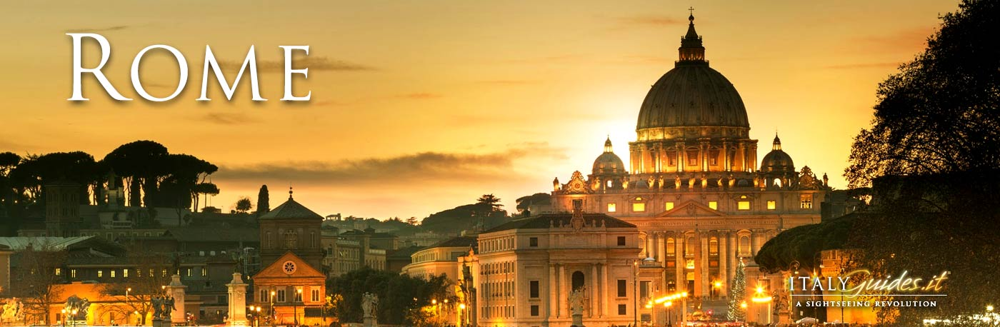
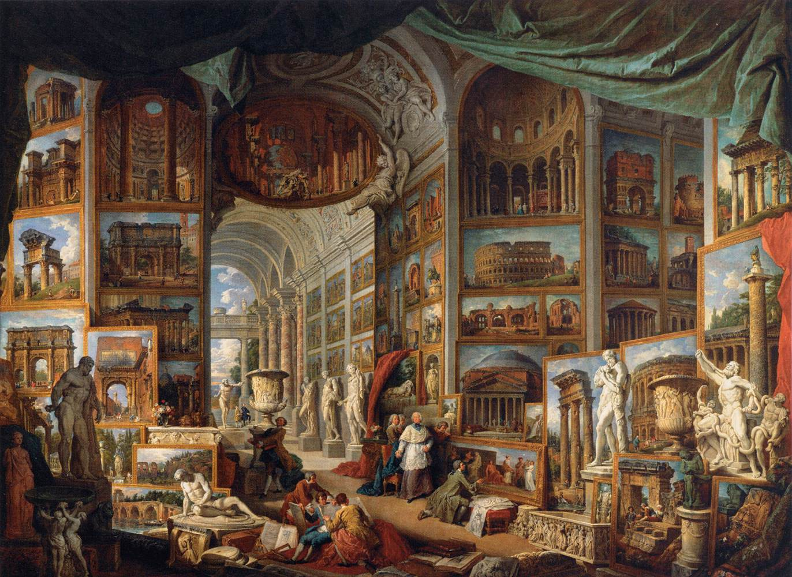
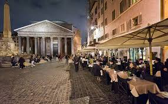

Welcome To Rome

History Of Rome : Rome is the capital city of Italy,
the home of the Vatican and the Papacy, and was the centre of a vast, ancient empire.
It remains a cultural and historical focus within Europe.
Legend says Rome was founded
by Romulus in 713 BCE, but the origins probably predate this, from a time when the settlement
was one of many on the Latium Plain. Rome developed where a salt trade route crossed the river
Tiber en route to the coast, near seven hills the city is said to be built on.It’s traditionally
believed that the early rulers of Rome where kings, possibly Etruscans, who were driven out c. 500 BCE.
Neighborhoods of Rome :The descriptions of Rome neighborhoods are listed in order of location (most central first), and then followed by those areas just outside the historic center.These are my own impressions about them, based on several criteria you should consider when deciding where to stay in Rome, and how staying in any one of them could affect your stay here.
Art & Architecture :The Romans wanted their art and architecture to be useful. They planned their cities and built bridges, aqueducts, public baths, and marketplaces, apartment houses, and harbors. When a Roman official ordered sculpture for a public square, he wanted it to tell future generations of the greatness of Rome. Although the practical uses of art were distinctly Roman, the art forms themselves were influenced by the ancient Greeks and Etruscans

Must See Sities in Rome:The list of what to see in Rome is immense. Packed with tourist attractions and world famous sites, it can be hard to find all the best places to see in Rome when you’re on a tight schedule. From world renowned and bustling tourist hubs like the Colosseum, to the relatively obscure Villa dei Quintili and far more beyond, Rome simply has so much to see!
Food & Restarents in Rome:Rome may be overflowing with restaurants, but many are mediocre, overpriced, and cater to tourists. So where should you really eat when in Rome? Here are five trusted Roman ristorantes that the tourist books don’t tell you about.The best Rome restaurants from an avant-garde pizzeria that experiments with unique types of flour to the favorite haunt of Slow Food founder Carlo Petrini. Plus: three incredible gelaterias, indie beer and fantastic wine.